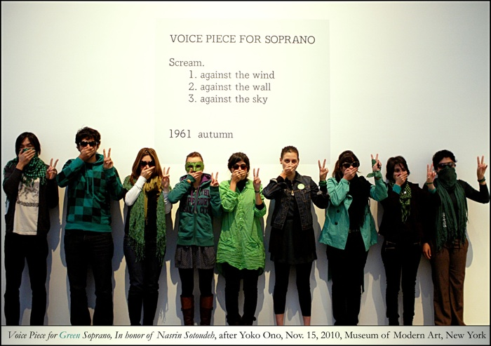

|
|
|
Browsing
Contact Us |
Campaigners |
Face to Face |
Tribune |
Interview |
News |
On the Web |
One Million |
Report
Farsi | Français | German | Italian | Spanish | العربية Also in this section
|
 Voice Piece for Green SopranoIn honor of Nasrin Sotoudeh and all political prisoners in Iran Monday 22 November 2010 View online : Politics of Resistance The Museum of Modern Art in New York is currently exhibiting Yoko Ono’s “living art.” One of the works is an instruction piece called Voice Piece for Soprano, made in 1961. This participatory artwork encourages visitors, in a subtle but attractive manner, to “Scream. 1. against the wind; 2. Against the wall; 3. Against the sky” in the museum’s atrium, so that their voice echoes throughout the many rooms. The result is often humorous: after initial hesitance, people scream and laugh together in a space where silence is usually essential. But even though we laughed and enjoyed ourselves, just like other visitors, and despite our love for this playful style of expression, it was impossible to interpret Ono’s interactive piece without remembering prisoners of conscience in contemporary Iran. Some of us are international students who have been studying in the West for some years. Some of us were raised in Iran’s capital, Tehran, and joined the protests that followed the presidential elections of 2009. Some of us are the children of the exiled and immigrants of the past and are rooted in the Western world as well. Some of us aren’t Iranians, but share a universal belief that their freedom is bound to our freedom, so that we are compelled to show our solidarity. Artists such as Ono helped create a more open concept of the limits of what can be considered art. Their generation and others showed that art knows no boundaries, that “anything goes,” and that its laws cannot be written in stone. But the phrase “anything goes” is specific to a context where actual freedom of expression is relatively normal, very much unlike Iran. “Anything goes,” with its loss of faith in ultimate narratives that desire to exclude the plurality of voices, is in Iran a much longed for celebration of freedom. The Green Movement’s mass protests were characterized by moments of joy and sadness, hope and horror. It was as if a people had been released and yet could not free themselves. They ran and could not move. They screamed but could not speak. They wished for a better future, but despaired. Everyday distinctions such as private and public, inside and outside, believer and unbeliever, man and woman, faded away in a massive catharsis that was yearned for and anticipated for decades, sending reverberating voices for freedom into the world. The brutal crackdown that followed still continues today. Besides punishing citizens for their actions in concert, the regime is attacking human rights lawyers such as Nasrin Sotoudeh, who is currently in an extremely dire need for help. Because of repeated hunger strikes, her current physical condition is very poor. Her (show) trial is scheduled to be held today, Nov. 15, 2010. The people of Iran refuse to be what their government wants them to be. We stand before you with covered mouths because the people of Iran do not enjoy the right to scream. We scream because they screamed and chanted in the night. We are peacefully making victory signs because we do not accept violence. Instead, we sing our Voice Piece for Green Soprano. We fear the regime’s capability for violence, so we have either covered our face or have given up on the hope to see our friends and relatives in Iran in the near future. We wear green, not because we want to exclude dissenting voices or insist on a single ideology, but because we want to affirm that the Green Movement is myriad, one out of many. Yoko Ono envisaged Voice Piece as a “protest song.” She hopes that individuals resist “situations in life that you have to scream against.” The MoMa also exhibited her Whisper Piece and Wish Piece. The voice of each one of us is but a whisper, but together our desire for freedom becomes a scream. When thousands of Iranians joined each other in Tehran for their marches in complete silence, their scream was transformed into a deafening whispering. What Ono calls the “vibration of wishing” is going to remain in Iran. Violence is nothing but the spastic reaction to its power. “It’s no longer something that just came into your head and went away.” Our wish, that our wish is victorious, that all Sotoudehs must be freed, is unremitting. |